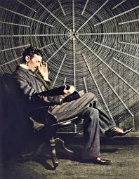
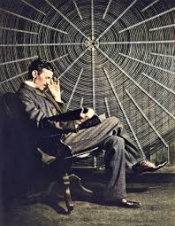

Nikola Tesla: The Man Who Lit Up the World
" The present is theirs; the future, for which I really worked, is mine."

Biography
A Visionary Ahead of His Time
Nikola Tesla was more than just an inventor—he was a visionary whose ideas shaped the modern world.
Born in 1856 in Smiljan, Croatia, Tesla displayed an extraordinary mind from a young age.
He could memorize entire books, perform complex calculations in his head, and visualize machines before ever building them.
The War of Currents & Triumph at the World's Fair
During the late 19th century, Tesla found himself in a fierce battle known as the "War of Currents."
Thomas Edison, the great inventor of the light bulb, insisted that direct current (DC) was the future of electricity.
But Tesla believed in alternating current (AC)—a system that could transmit electricity over long distances with greater efficiency.
In 1893, the world saw Tesla’s genius firsthand at the Chicago World’s Fair.
His AC-powered system, backed by industrialist George Westinghouse, illuminated the entire fairground.
Over 100,000 electric bulbs flickered to life, turning night into day.
It was a breathtaking moment that stunned the world and solidified Tesla’s AC system as the future of electricity.
A Man Who Dreamed of a Better World
Tesla's vision extended far beyond electricity. He dreamed of wireless energy, radio waves,
and even a worldwide communication system—concepts that laid the foundation for Wi-Fi, radio, and modern telecommunications.
One of his most ambitious projects was the Wardenclyffe Tower, a massive structure in New York that Tesla believed could provide free energy to the entire world.
Unfortunately, funding ran out, and the project was never completed. But Tesla never stopped dreaming.
A Legacy That Lives On
Despite facing financial struggles in his later years,
Tesla’s contributions to science and technology remain immeasurable.
His work led to radio, X-rays, remote controls, neon lights, robotics, and even the idea of wireless power.
Today, the name "Tesla" is synonymous with innovation, inspiring new generations of scientists, engineers, and dreamers.
His inventions power our world, his ideas shape our future, and his legacy lives on as a symbol of brilliance and perseverance.
Fun facts
1.He Had an Incredible Memory
2.He Claimed to Have Invented the Smartphone (Sort of) In 1901
3.He Lived in Hotels to Avoid Rent Debt
4.He Had a Rivalry with Thomas Edison
5.He Claimed to Have Received Alien Signals
6.He Was Obsessed with the Number
7.He Created the First Remote-Controlled Boat
8.Pigeons Were His Only True Friends
9.He Planned to Provide Free Energy to the World
10.He Died Penniless and Alone
.jpg)
.jpg) 
